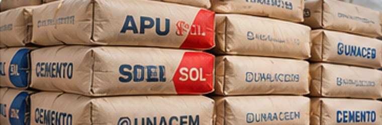
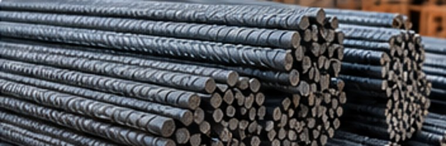
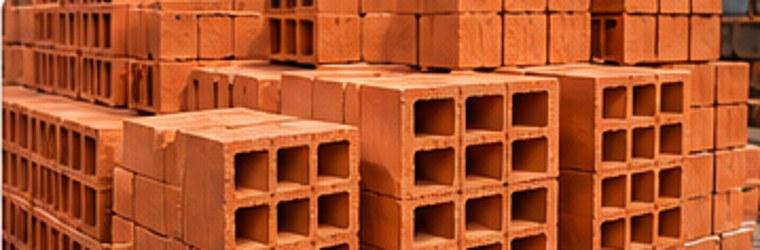
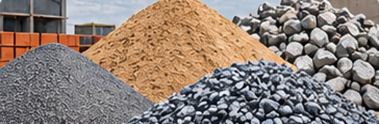
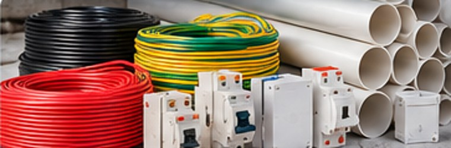
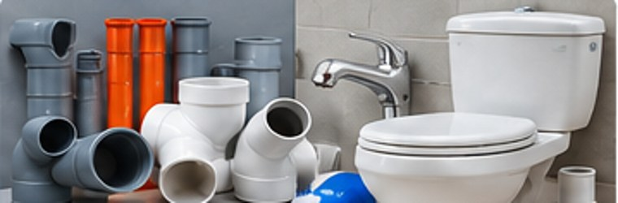
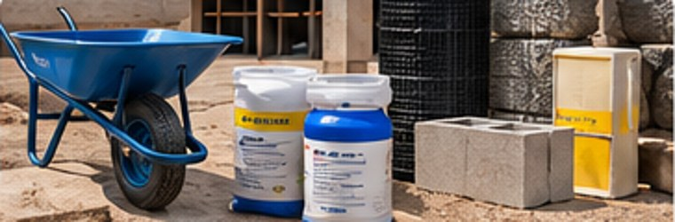

Consultar inventario propio
Consulta productos disponibles en el almacén de San Martín de Porres. La disponibilidad se confirma al momento de cotizar.
Consultar materiales →Abastecimiento para constructoras, contratistas, comercios y particulares. Venta desde inventario propio y distribución bajo pedido.
Consulta productos disponibles en el almacén de San Martín de Porres. La disponibilidad se confirma al momento de cotizar.
Consultar materiales →Solicita cotizaciones por volumen. Evaluamos proveedores, transporte y condiciones de entrega.
Cotizar por volumen →Fotografías ilustrativas. Precios, marcas, especificaciones, stock y flete sujetos a cotización y confirmación.
Selecciona materiales, indica cantidades y agrégalos al carrito. Al finalizar, revisa tu pedido y solicita una cotización conjunta por WhatsApp. No se muestran precios.
No encontramos categorías que coincidan con tu búsqueda.

Bolsas de cemento para obras y proyectos. Consulta tipo, marca y cantidad.

Barras corrugadas, perfiles, mallas y alambres según especificaciones.

Ladrillos para muros, techos y tabiquería, según tipo y presentación.

Arena fina, arena gruesa, piedra chancada y hormigón por m³.

Cables, canalizaciones, dispositivos de protección y accesorios.
Herramientas manuales y eléctricas, fijaciones y suministros.

Tuberías PVC, conexiones, válvulas y accesorios sanitarios.

Alambres, clavos, adhesivos y materiales complementarios de obra.